Module 17 · AI for geometry: problem solving, theorem proving, math NLP
From DDAR and AlphaGeometry2 to Lean, Aristotle and Vietnamese math NLP
- Tell the algebraic and synthetic families apart
- Describe DDAR, auxiliary construction and SKEST
- Compute pass@k and read the IMO-AG-50 table
- Recognise dataset and language-coverage traps
- Link the results to the lab Helstrom surrogate
📚 Source documents of this module (each file checked against its actual content)
| File in the archive | Paper (verified against its content) | Pages | Status | Used in this module |
|---|---|---|---|---|
| 001_Trinh_2024_AlphaGeometry.pdf | On the lack of external response of a nonlinear medium in the second-harmonic generation process F. Cakoni, N. Hovsepyan, et al. · 2024 · arXiv:2401.00998 | 41 | Wrong file: content does not match the title | Content does not match the file name; not quoted. |
| 002_Hubert_2025_AlphaProof_AG2.pdf | Gold-medalist Performance in Solving Olympiad Geometry with AlphaGeometry2 Y. Chervonyi, T. Trinh, et al. · 2025 · arXiv:2502.03544v3 | 34 | Read, title matches | Secs. 1 to 8, Figs. 2, 4, 9, Table 4; 42/50 solved. |
| 003_Chen_2024_Newclid.pdf | Newclid: A User-Friendly Replacement for AlphaGeometry V. Sicca, T. Xia, et al. · 2024 · arXiv:2411.11938 | 51 | Partly read (long book) | Read abstract, introduction, AG-30 versus AG-231 comparison (pp. 1 to 4). |
| 004_Zhang_2025_LeanGeo.pdf | LeanGeo: Formalizing Competitional Geometry Problems in Lean C. Song, Z. Wang, et al. · 2025 · arXiv:2508.14644 | 28 | Read, title matches | Table 1, Table 3, LeanGeo-Bench 122 problems. |
| 005_Mathlib_2020_Lean_Library.pdf | The Lean Mathematical Library The mathlib Community · 2019 · arXiv:1910.09336v2 (CPP 2020) | 15 | Read, title matches | 15k to 140k lines, 73 contributors. |
| 006_Li_2025_MagicGeo.pdf | MagicGeo: Training-Free Text-Guided Geometric Diagram Generation J. Wang, T. Zhang, et al. · 2025 · arXiv:2502.13855 | 12 | Read, title matches | Fig. 2, Tables 1, 2. |
| 008_Lu_2022_Diagram_Parsing.pdf | Plane Geometry Diagram Parsing M.-L. Zhang, F. Yin, et al. · 2022 · arXiv:2205.09363 (IJCAI) | 11 | Read, title matches | Fig. 4, Eq. (3), PGDP5K. |
| 009_Chen_2025_GPS_Survey.pdf | A Survey of Deep Learning for Geometry Problem Solving J. Ma, W. Wang, Q. Jin · 2025 · arXiv:2507.11936v5 | 34 | Partly read (long book) | Read abstract, Figs. 2, 3, 5. |
| 010_Liu_2025_GPS_LLM_Survey.pdf | Towards Geometry Problem Solving in the Large Model Era: A Survey Y. Zhao, X. Wang, et al. · 2025 · arXiv:2506.02690 | 14 | Partly read (long book) | Read abstract, Figs. 1 to 3. |
| 012_Seo_2015_Auto_Proving.pdf | Parallel Metric Tree Embedding based on an Algebraic View on Moore-Bellman-Ford S. Friedrichs, C. Lenzen · 2016 · arXiv:1509.09047 | 55 | Wrong file: content does not match the title | Content does not match the file name; not quoted. |
| 013_Peng_2021_MathBERT.pdf | MathBERT: A Pre-trained Language Model for General NLP Tasks in Mathematics Education J. T. Shen, M. Yamashita, et al. · 2021 · arXiv:2106.07340v5 | 10 | Read, title matches | Fig. 1, Table 2; 100M tokens. |
| 014_Patel_2021_MWP_NLP.pdf | Are NLP Models really able to Solve Simple Math Word Problems? A. Patel, S. Bhattamishra, N. Goyal · 2021 · arXiv:2103.07191 (NAACL) | 16 | Read, title matches | Tables 2, 4, 10. |
| 015_Lan_2022_MWPToolkit.pdf | MWPToolkit: An Open-source Framework for Deep Learning-based Math Word Problem Solvers Y. Lan, L. Wang, et al. · 2021 · arXiv:2109.00799 (AAAI 2022) | 9 | Read, title matches | Architecture, Table 4. |
| 016_Vu_2018_VnCoreNLP.pdf | VnCoreNLP: A Vietnamese Natural Language Processing Toolkit T. Vu, D. Q. Nguyen, et al. · 2018 · NAACL Demos | 5 | Read, title matches | 18K words/s, F1 88.55. |
| 017_Nguyen_2020_PhoBERT.pdf | PhoBERT: Pre-trained language models for Vietnamese D. Q. Nguyen, A. T. Nguyen · 2020 · arXiv:2003.00744 (Findings EMNLP) | 6 | Read, title matches | Tables 2, 3. |
| 018_Li_2024_NeurosymbolicData.pdf | Quantitative Approximation for Neural Operators in Nonlinear Parabolic Equations T. Furuya, K. Taniguchi, S. Okuda · 2024 · arXiv:2410.02151 | 31 | Wrong file: content does not match the title | Content does not match the file name; not quoted. |
| 019_Zhang_2025_Neurosymbolic_AI.pdf | Neuro-Symbolic Artificial Intelligence: Towards Improving the Reasoning Abilities of LLMs X.-W. Yang, J.-J. Shao, et al. · 2025 · arXiv:2508.13678 | 9 | Read, title matches | Figs. 1 to 3, three-way taxonomy. |
| 020_Chen_2024_STEAM_Geometry.pdf | Supporting Learning Differences: Effects of Cognitive Training in a School-Based Sample L. Looney, E. Wong, et al. · 2024 · Education Sciences | 13 | Wrong file: content does not match the title | Content does not match the file name; not quoted. |
| 022_Hwang_2024_ITS_Math.pdf | Digital Bonds: Computer-Mediated Communication in Early Childhood Education A. Wilke, T. van Rhijn, et al. · 2024 · Education Sciences | 18 | Wrong file: content does not match the title | Content does not match the file name; not quoted. |
| 023_Hoffmann_2022_Constraint_Solving.pdf | Usability and Aesthetics: Better Together for Automated Repair of Web Pages T. Le-Cong, X. B. D. Le, et al. · 2022 · arXiv | 11 | Wrong file: content does not match the title | Content does not match the file name; not quoted. |
| 024_Aristotle_2025_IMO_Theorem.pdf | Aristotle: IMO-level Automated Theorem Proving The Harmonic Team · 2025 · arXiv | 23 | Read, title matches | Fig. 1, Secs. 2.1 and 2.3. |
Lecture (slides)
Use the ← → keys or the buttons; ⛶ opens full-screen presentation.
Two families of automated geometry solving
- \(h_i\)hypotheses written as polynomials
- \(g\)the conclusion to prove
- \(\sqrt{I}\)radical of the ideal
- \(F_t\)facts derived by step t
| Family | Examples | Trait |
|---|---|---|
| Algebraic | Wu, area method, Gröbner | sure but hard to read |
| Synthetic | Deduction database, full angle | close to human proofs |
Task taxonomy for geometry problem solving
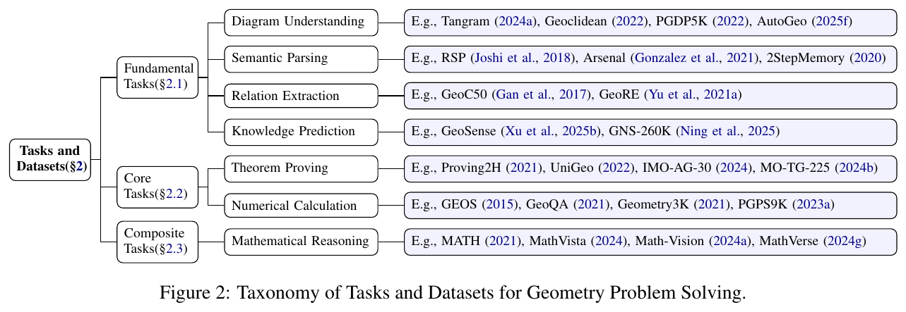
Nguồn: Ma, Wang, Jin, A Survey of Deep Learning for Geometry Problem Solving, arXiv:2507.11936v5, 2025, Fig. 2, tr. 3
- \(\hat Y^{(k)}_i\)the k top-ranked answers
Theorem proving versus numerical calculation
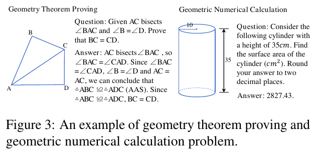
Nguồn: Ma, Wang, Jin, A Survey of Deep Learning for Geometry Problem Solving, arXiv:2507.11936v5, 2025, Fig. 3, tr. 3
- \(r=10,\ h=35\)read off the figure (label 10 is the radius)
- \(2827{,}43\)answer printed in the figure
The geometry-solving literature surges after 2022
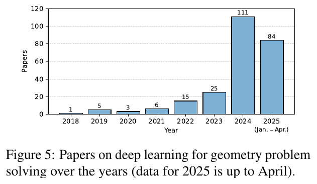
Nguồn: Ma, Wang, Jin, A Survey of Deep Learning for Geometry Problem Solving, arXiv:2507.11936v5, 2025, Fig. 5, tr. 29
- \(\rho\)compound growth per year
The survey text says "110 papers in 2024"; the chart prints 111. The chart value is used here.
DDAR and the deduction closure
- \(\mathrm{DD}\)geometric deduction rules (deductive database)
- \(\mathrm{AR}\)linear arithmetic over angles and lengths (algebraic reasoning)
When \(\mathrm{cl}(F_0)\) lacks the conclusion, the language model proposes an auxiliary construction and DDAR runs again. AlphaGeometry2 stresses that DDAR drives both training-data generation and proof search.
Timeline: from Vietnamese toolkits to AlphaGeometry2 and Aristotle
The domain language and geometric predicates
- \(\texttt{cyclic}\)four points on one circle
- \(\texttt{eqangle}\)two directed angles are equal
AG1 has 9 basic predicates covering 66% of IMO 2000 to 2024 problems. AG2 adds acompute, rcompute, distmeq, distseq, angeq and 11 locus types, raising coverage to 88%.
DDAR2 is over 300 times faster
- \(t\)mean time over 25 IMO problems DDAR cannot solve, 50 runs
- \(N\)number of points in the problem
Hashing triangle "shapes" and (A, B, angle AXB) for cyclic quadrilaterals replaces exhaustive search; Gaussian elimination is rewritten in C++ through pybind11.
Synthetic data from random diagrams
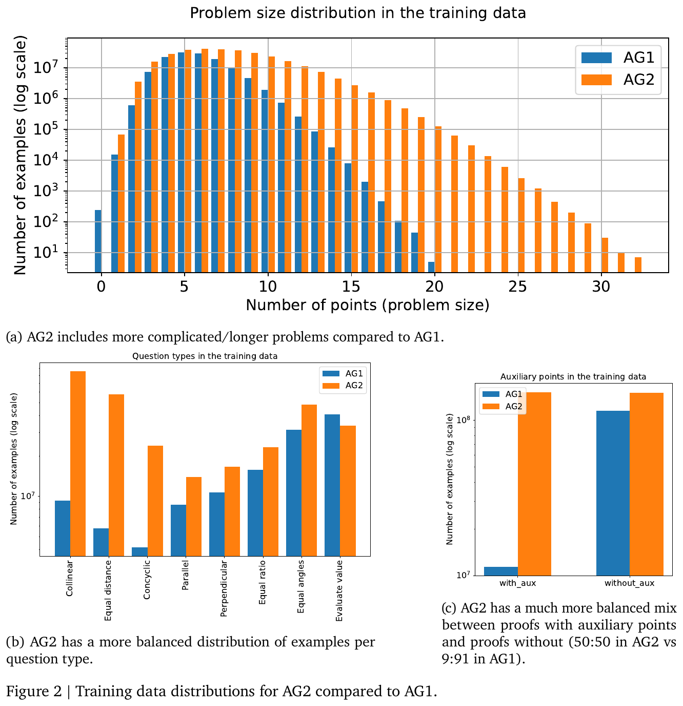
Nguồn: Chervonyi et al., AlphaGeometry2, arXiv:2502.03544v3, 2025, Fig. 2, tr. 8
Minimising a problem with a greedy algorithm
- \(p\)taken in reverse topological order
Enumerating all subsets to find the minimal problem costs \(2^{|P|}\); the greedy algorithm needs only \(|P|\) checks if the check is monotone. The construction-dependency closure breaks monotonicity, hence the reverse topological order.
| \(|P|\) | 10 | 20 | 30 |
|---|---|---|---|
| \(2^{|P|}\) | 1024 | 1048576 | 1073741824 |
| \(|P|\) | 10 | 20 | 30 |
SKEST, search with shared knowledge
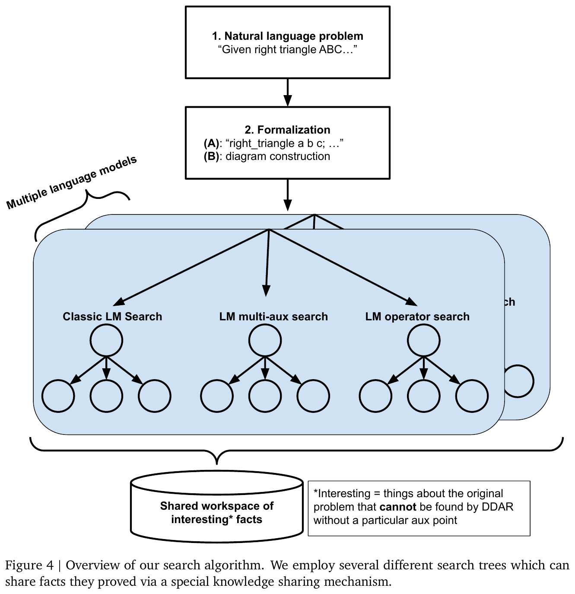
Nguồn: Chervonyi et al., AlphaGeometry2, arXiv:2502.03544v3, 2025, Fig. 4, tr. 10
Sampling temperature and perplexity
- \(T\)temperature; AG2 uses T = 1.0 and top-k with k = 32
- \(z\)model logits
| \(T\) | \(z=(2,1,0{,}1)\) |
|---|---|
| 0.01 | 1 , 3.72e-44 , 3.05e-83 |
| 0.5 | 0.864 , 0.117 , 0.0193 |
| 1 | 0.659 , 0.242 , 0.0986 |
| 2 | 0.502 , 0.304 , 0.194 |
With greedy decoding (T = 0, k = 1, no search) the model solves 2 of 26 problems needing auxiliary constructions; with T = 1.0 and 32 samples it solves 9 of 26.
AlphaGeometry2 results on IMO-AG-50
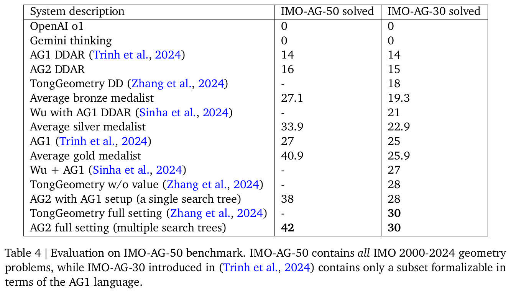
Nguồn: Chervonyi et al., AlphaGeometry2, arXiv:2502.03544v3, 2025, Table 4, tr. 15
Worked number: sampling cost per level
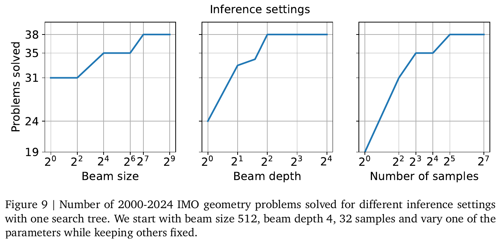
Nguồn: Chervonyi et al., AlphaGeometry2, arXiv:2502.03544v3, 2025, Fig. 9, tr. 15
- \(B,D,k\)beam size, beam depth, number of top-k samples
Worked number: from eight hours to a little over a minute
- \(25\)IMO problems DDAR cannot solve, used for timing
| System | Hours | Seconds |
|---|---|---|
| DDAR1 | 8.191 | 29489.2 |
| DDAR2 | 0.0239 | 86.18 |
One theorem, two machine-checkable proofs
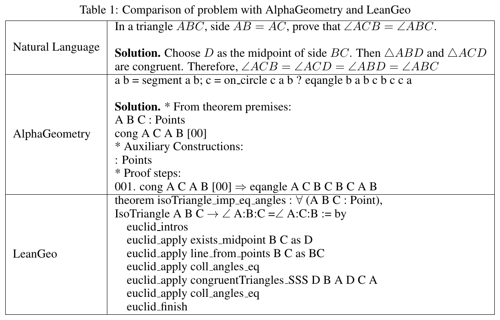
Nguồn: Song et al., LeanGeo, arXiv:2508.14644, 2025, Table 1, tr. 2
- \(D\)midpoint of BC in the LeanGeo proof
Numeric check: \(A=(0,3),B=(-2,0),C=(2,0)\) give \(AB=AC=3.606\) and \(\angle B=\angle C=56.31^\circ\).
LeanGeo-Bench and the pass@k metric
- \(n\)samples generated per problem
- \(c\)number of correct samples
| Model | pass@1 | pass@2 | pass@4 |
|---|---|---|---|
| Gemini 2.5 Pro | 17.21 | 22.95 | 27.05 |
| o4-mini | 19.67 | 21.31 | 22.13 |
| Claude 4 | 4.92 | 9.02 | 10.66 |
Check: Gemini 2.5 Pro succeeds on \(10+4+13+6=33\) of 122 problems, \(33/122=27.05\%\). None of the 62 Olympiad-level problems is solved by any model.
Aristotle: Monte Carlo search over proof graphs
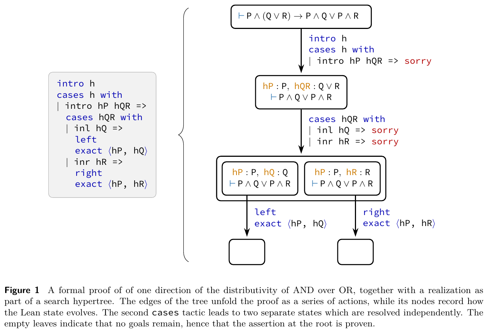
Nguồn: Harmonic Team, Aristotle, 2025, Fig. 1, tr. 3
- \(P\)prior from the generative policy
- \(Q\)estimated value
Example \(c=1.5,N=100\): \((Q,P,n)=(0.5;0.6;10)\to1.318\); \((0.6;0.1;30)\to0.6484\); \((0;0.3;0)\to4.5\): the untried branch is preferred.
MagicGeo: from statement to coordinates to TikZ
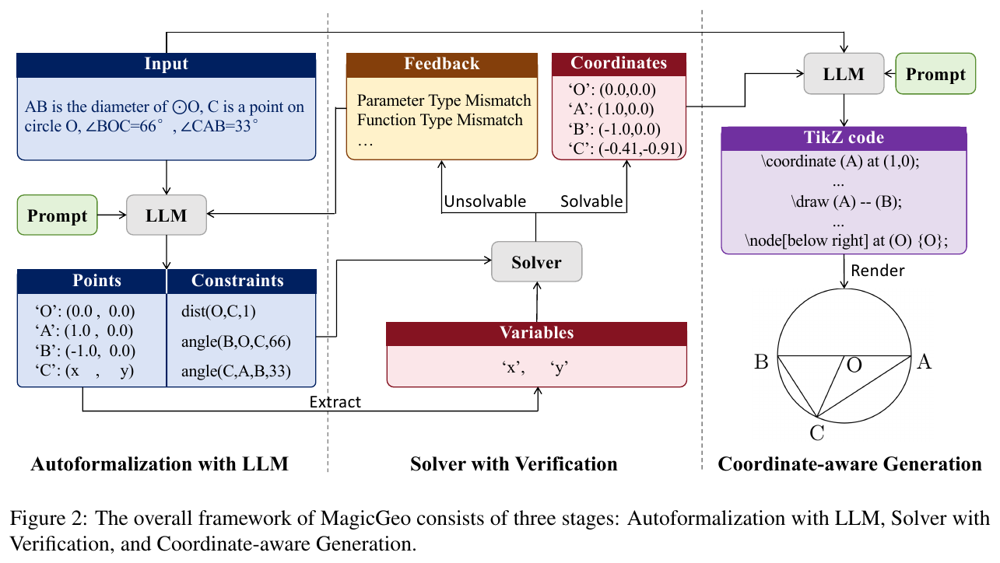
Nguồn: Wang et al., MagicGeo, arXiv:2502.13855, 2025, Fig. 2, tr. 4
- \(C\)matches the coordinates (-0.41, -0.91) printed in the figure
PGDPNet: plane geometry diagram parsing
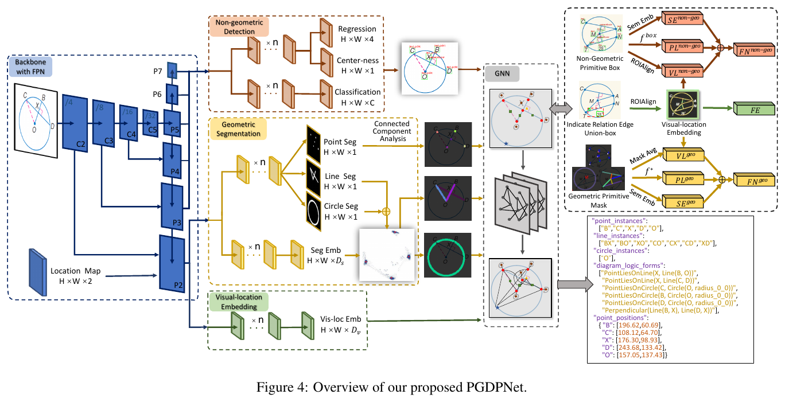
Nguồn: Zhang et al., Plane Geometry Diagram Parsing, arXiv:2205.09363, 2022, Fig. 4, tr. 4
- \(*\)point, line or circle
Example 4 pixels \(y=(1,0,0,0)\), \(p=(0.8,0.1,0.2,0.05)\), \(w=5\): \(L=0.7537\).
SVAMP exposes shortcuts in older datasets
- \(\mathrm{Graph2Tree\,(R)}\)best model, with RoBERTa
Language coverage versus solve rate
- \(12\%\)remaining: 3D, inequalities, non-linear equations, arbitrary number of points
Of 50 problems, \(0.84\times50=42\) are solved; 6 cannot be formalised; 2 were attempted but unsolved (IMO 2018 P6 and 2023 P6 need inversion or projective geometry).
Benchmark size changes the conclusion
- \(\Delta\)gain of the LLM over DDAR + heuristics
The strongest LLMs reach only about 27% pass@4 and solve no Olympiad-level problem in LeanGeo-Bench (Song et al., 2025, Table 3). Natural proofs skip diagram conditions ("the figure shows") that Lean demands explicitly.
Implicit diagrams and formal verification
Extension: two-way neuro-symbolic coupling
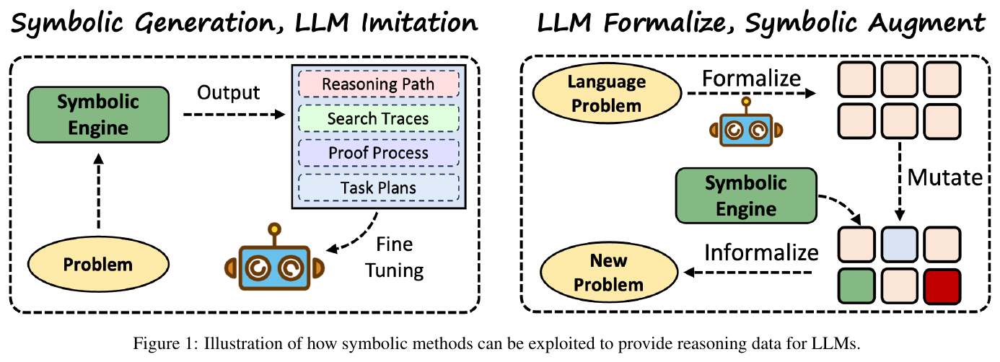
Nguồn: Yang et al., Neuro-Symbolic AI for LLM reasoning, arXiv:2508.13678, 2025, Fig. 1, tr. 3
- \(\pi\)reasoning path produced by the engine
MathBERT: a language model for math education
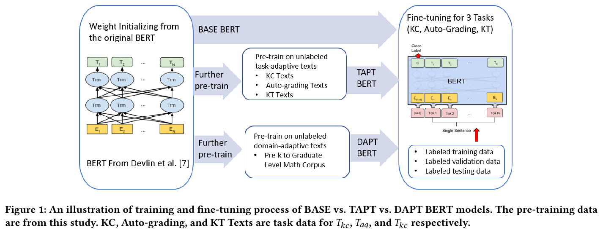
Nguồn: Shen et al., MathBERT, arXiv:2106.07340, 2021, Fig. 1, tr. 3
- \(\mathrm{TAPT}\)further pre-training on task data
PhoBERT and Vietnamese NLP
- \(13{,}8\mathrm{M}\)sequences in the 20GB word-level corpus
| Task | Best before | PhoBERT | Gap |
|---|---|---|---|
| POS (Acc) | 96.0 | 96.8 | 0.8 |
| LAS | 74.99 | 78.77 | 3.78 |
| NER (F1) | 91.3 | 94.7 | 3.4 |
| NLI (Acc) | 79.7 | 80.0 | 0.3 |
A fast toolkit for Vietnamese math text
- \(\mathrm{K}\)thousand words per second (NER, same machine)
The paper picks feature-based models for low-resource components and uses neural nets only for segmentation; the result is about 10 times faster than BiLSTM-CNN-CRF (Vu et al., 2018).
The Lean library under machine proofs
- \(73,\ 11\)73 contributors, 11 maintainers
Geometry in mathlib is algebraic with little support for diagram-based reasoning; LeanGeo and Aristotle build on it (Song et al., 2025).
A real case: from statement to automatic proof
AG2 was part of the system with silver-medal standard at IMO 2024; the paper also reports progress towards a natural-language system: Gemini translates the statement into the AG language and an algorithm generates the diagram (Appendix G).
\[ \text{Vietnamese statement}\to\text{AG language}\to\text{diagram}\to\text{DDAR + LM}\to\text{proof} \]Summary: an exact engine plus a fast learner
- \(84\%\)AG2 on IMO 2000 to 2024
- \(5/6\)Aristotle on IMO 2025
- Two families: algebraic and synthetic.
- Synthetic data from random diagrams replaces human-written problems.
- Metrics and benchmark size decide the conclusion.
Detailed notes
Theory and historical background
Machine proving of geometry theorems has two lines: algebraic (Wu, area method, Gröbner) and synthetic (deduction database, full angle). AlphaGeometry (2024) pairs a language model with the DDAR engine; AlphaGeometry2 (2025) widens the language, speeds the engine by over 300 times and adds SKEST search. In parallel Lean 4 and mathlib allow formal verification, while surveys (Ma et al., Zhao et al., 2025) classify tasks, data and methods.
Plain words, technique, table, calculation
Plain words: the machine draws random figures, deduces every true fact, then learns which extra points to add. Technique: \(F_{t+1}=F_t\cup\mathrm{DD}(F_t)\cup\mathrm{AR}(F_t)\); the language model proposes an auxiliary construction when the closure lacks the conclusion. Table: Table 4 of AG2. Calculation: the examples below.
\(A=(0,0),B=(2a,0),C=(2b,2c)\), \(M,N\) midpoints of \(AB,AC\) with \(a=1.3,b=0.7,c=1.1\): the cross product \(\vec{MN}\times\vec{BC}=0\) so \(MN\parallel BC\), ratio \(|MN|/|BC|=0.5\).
Beam \(128\), depth \(4\), \(32\) samples: \(128\cdot32=4096\) samples per level; \(4\) levels give at most \(4\cdot4096=16384\) model calls (rough count, assumption).
One problem, \(n=10\) samples, \(c=3\) correct: pass@1 \(=0.3\), pass@5 \(=0.9167\). Using more samples raises the metric although the model is unchanged.
A class of 40 students submits proofs; a grader compares only the number for calculation problems (\(2827.43\)) but must check each step of a proof. Assume 6 steps and step accuracy \(0.95\): the whole proof is right with \(0.95^6=0.735\).
Logits \((2,1,0.1)\): \(T=1\) gives top probability \(0.659\); \(T=0.5\) gives \(0.864\); \(T=2\) gives \(0.502\). A higher temperature flattens the distribution.
If a run takes \(1179.57\) s and the new version \(3.44711\) s, 1000 runs save \(1000\cdot(1179.57-3.44711)/3600=326.7\) hours.
Table 4 places "Average gold medalist" 40.9 between AG1 (27) and full AG2 (42); this says AG2 beats the average, not every contestant.
Pitfalls in exercises
- Mixing language coverage (66% to 88%) with solve rate (54% to 84%).
- Forgetting \(\binom{n-c}{k}/\binom{n}{k}\) and using \(c/n\) for pass@k.
- Multiplying the mean times and taking it for a new measurement.
- Reading 110 papers in 2024 from the text instead of 111 from the chart.
- Assuming a high score on an older benchmark proves the model understands the problem.
Findings about the source folder
- Six files do NOT match their names: 001 (named AlphaGeometry, actually an applied-math paper on a nonlinear medium), 012 (Auto_Proving, actually Parallel Metric Tree Embedding), 018 (NeurosymbolicData, actually neural-operator approximation for parabolic equations), 020 (STEAM Geometry, actually cognitive training), 022 (ITS Math, actually parent-educator communication), 023 (Constraint Solving, actually web-page repair). Nothing is quoted from them.
- 003 Newclid is 51 pages; abstract, introduction and the AG-30 comparison were read (partial); 009 is a 34-page survey; abstract and Figs. 2, 3, 5 were read (partial).
- File names carry years that differ from the real ones for a few papers (002 is the 2025 v3; 013 is 2021, v5 dated 2023).
Interactive practice
Quick self-check
Deep practice
Open the bank of 45 multiple-choice questions and 5 code-writing tasks →
References
- Y. Chervonyi et al., Gold-medalist Performance in Solving Olympiad Geometry with AlphaGeometry2, arXiv:2502.03544v3, 2025.
- C. Song et al., LeanGeo, arXiv:2508.14644, 2025.
- V. Sicca et al., Newclid, arXiv:2411.11938, 2024.
- The Harmonic Team, Aristotle: IMO-level Automated Theorem Proving, 2025.
- J. Ma, W. Wang, Q. Jin, A Survey of Deep Learning for Geometry Problem Solving, arXiv:2507.11936v5, 2025.
- A. Patel et al., Are NLP Models really able to Solve Simple Math Word Problems?, arXiv:2103.07191, 2021.
- D. Q. Nguyen, A. T. Nguyen, PhoBERT, arXiv:2003.00744, 2020.
- The mathlib Community, The Lean Mathematical Library, arXiv:1910.09336, 2019.